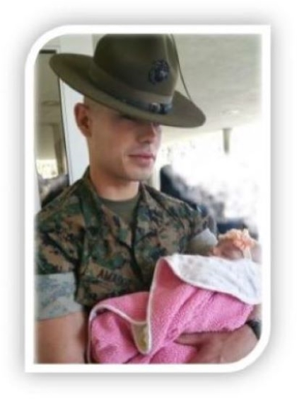
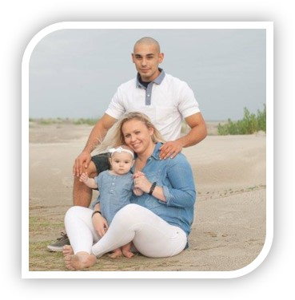
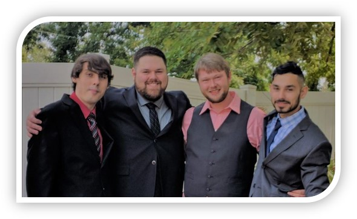
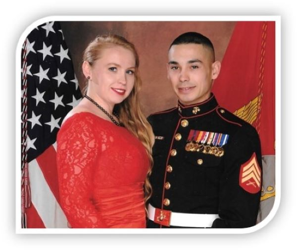
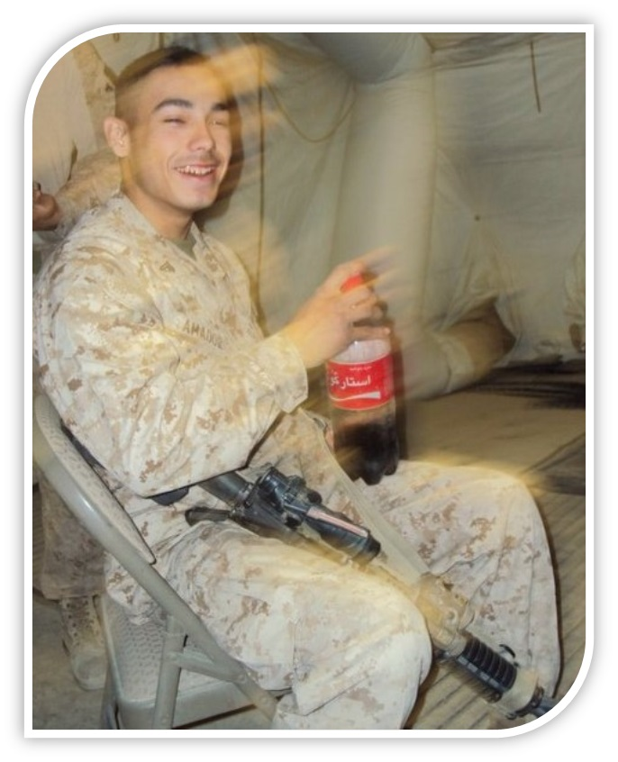

John-David A. Amador
Interactive Media Developer
John-David A. Amador is a budding and ambitious game developer that works for players to give them captivating enjoyable experiences through wealthy gameplay. JD is also a Computer Science student with a focus on programming and prior Staff Sergeant in the United States Marine Corps. he is building games, simulations, and other input driven interactive multimedia. JD believes in creating deep systemic worlds alive with personality in their own right that developers and producers like Deck Nine and Square Enix are renowned for. On active duty JD’s major occupational specialties were Drill Instructor, Rappelling Master, Marksmanship Instructor, Martial Arts Instructor, Aviation Communication Systems Technician, and Field Wireman during his 12 years of service.

Deciding to acquire a more technical specialty after his first enlistment, JD became an Aviation Communication Systems Technician. In 2013 he deployed to Afghanistan with the air wing where he ensured the fidelity of communication assets. Working with systems and networking sparked a shift in JD’s interest towards programming. At this point He knew pursuing a career including systems, programming, and user experience were his future.

JD married his wife Emily, who was also a Marine, when she returned from Afghanistan in 2011, has two daughters Josephine, 4 years old and Charlotte (Lottie) 6 months old, and a 7-year-old family dog called Benny. Emily completed her service in 2016. She left the Marines and earned a degree in Political Science, to pursue a career in politics. She is currently a Wounded Warrior Program Congressional Fellow working under the House of Representatives for veteran constituents.
Having a place in his heart for video games from early childhood, especially role-playing games, has made games extremely impactful to his relationships and history, defining an era of JD’s life. He is aspiring to create a product that is better than what is being produced and desires to give this new generation the kind of compelling experiences he remembers, such as staying up late at night with friends and family taking turns on single player games just to discover the next chapter. JD is interested in programming especially non player character behavior, friendly adaptive swarm behavior, dynamic camera systems, and independent systemic environmental interactions.




